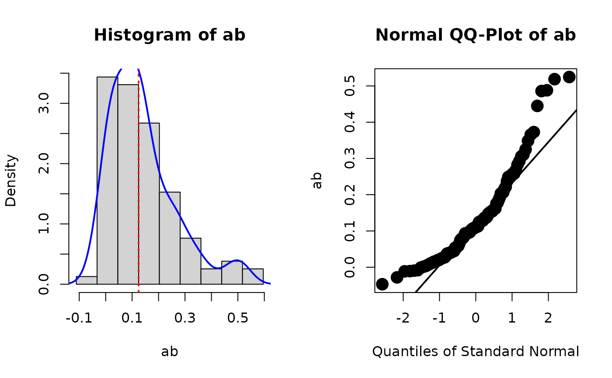

It receives a lavaan::lavaan object fitted with bootstrapping standard errors requested, computes the user-defined parameters in each bootstrap samples, and returns a lavaan::lavaan object with the estimates stored.
Value
store_boot_def() returns
the fit object set to
object, with the bootstrap values
of user-defined parameters in the
bootstrap samples, as a matrix,
stored in the
slot external of object under
the name
shh_boot_def.
get_boot_def() returns a matrix
of the stored bootstrap estimates
of user-defined parameters
Details
lavaan::lavaan() and its wrappers,
such as lavaan::sem() and
lavaan::cfa(), stores the estimates
of free parameters in each bootstrap
sample if bootstrapping is requested.
However, if a model has user-defined
parameters, their values in each
bootstrap sample are not stored.
store_boot_def() computes the
retrieves the stored bootstrap
estimates and computes the values
of user-defined parameters. The
values are then stored in the slot
external of the object,
in the element shh_boot_def.
The bootstrap estimates can then be
used by other functions for diagnostics
purposes.
get_boot_def() extracts the
bootstrap estimates of user-defined
parameters from a 'lavaan'-class
object. If none is stored, NULL
is returned.
store_boot_def() is usually used
with diagnostic functions such
as plot_boot().
Author
Shu Fai Cheung https://orcid.org/0000-0002-9871-9448.
Examples
library(lavaan)
set.seed(5478374)
n <- 50
x <- runif(n) - .5
m <- .40 * x + rnorm(n, 0, sqrt(1 - .40))
y <- .30 * m + rnorm(n, 0, sqrt(1 - .30))
dat <- data.frame(x = x, y = y, m = m)
model <-
'
m ~ a*x
y ~ b*m
ab := a*b
'
# Should set bootstrap to at least 2000 in real studies
fit <- sem(model, data = dat, fixed.x = FALSE,
se = "boot",
bootstrap = 100)
summary(fit)
#> lavaan 0.6-19 ended normally after 1 iteration
#>
#> Estimator ML
#> Optimization method NLMINB
#> Number of model parameters 5
#>
#> Number of observations 50
#>
#> Model Test User Model:
#>
#> Test statistic 0.020
#> Degrees of freedom 1
#> P-value (Chi-square) 0.887
#>
#> Parameter Estimates:
#>
#> Standard errors Bootstrap
#> Number of requested bootstrap draws 100
#> Number of successful bootstrap draws 100
#>
#> Regressions:
#> Estimate Std.Err z-value P(>|z|)
#> m ~
#> x (a) 0.569 0.325 1.749 0.080
#> y ~
#> m (b) 0.219 0.146 1.495 0.135
#>
#> Variances:
#> Estimate Std.Err z-value P(>|z|)
#> .m 0.460 0.086 5.381 0.000
#> .y 0.570 0.110 5.178 0.000
#> x 0.078 0.012 6.782 0.000
#>
#> Defined Parameters:
#> Estimate Std.Err z-value P(>|z|)
#> ab 0.125 0.126 0.992 0.321
#>
# store_boot_def() is usually used with plot_boot()
# First, store the bootstrap estimates of user-defined
# parameters
fit_with_boot_def <- store_boot_def(fit)
# Second, plot the distribution of the bootstrap estimates of
# 'ab'
plot_boot(fit_with_boot_def, "ab", standardized = FALSE)
